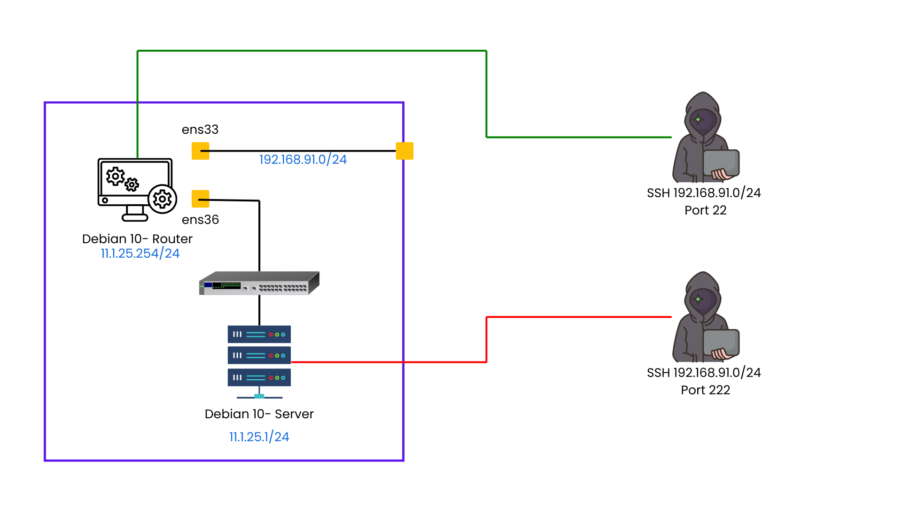
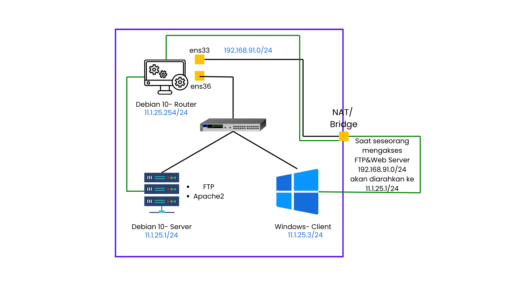

Toppologi
SSH
Dimateri kali ini saat seseorang akan SSH akan ada 2 kemungkinan.
- Saat SSH ke port 22, dia diarahkan ke Debian 10- Router
- Saat SSH ke port 222, dia diarahkan ke Debian 10- Server
FTP&Web Server
Saat seseorang mengakses FTP&Web Server 192.168.91.0/24 akan diarahkan ke 11.1.25.1/24
Konfigurasi
Sebelum itu kita akan konfigurasi semua ini didalam Debian 10- Router
SSH
Konfigurasi IPTABLES DMZ (SSH)
iptables -A INPUT -p tcp -m multiport -d 192.168.91.150 --dport 22 -j ACCEPT
iptables -A FORWARD -p tcp -m multiport -d 11.1.25.1 --dport 22 -j ACCEPT
iptables -t nat -A PREROUTING -p tcp -m multiport -d 192.168.91.150 --dport 222 -j DNAT --to 11.1.25.1:22
Web Server
Konfigurasi IPTABLES DMZ (HTTP server)
iptables -A INPUT -p tcp -m multiport -d 192.168.91.150 --dport 80 -j ACCEPT
iptables -A FORWARD -p tcp -m multiport -d 11.1.25.1 --dport 80 -j ACCEPT
iptables -t nat -A PREROUTING -p tcp -m multiport -d 192.168.91.150 --dport 80 -j DNAT --to 11.1.25.1:80
FTP
Debian 10- Router
Interfaces
ens33 NAT : 192.168.91.0/24
ens36 LAN : 11.1.25.254/24
Package
- net-tools
- iptables-persistent
- netfilter-persistent
- proftpd
- vsftpd (new)
Perbedaan
Proftpd dan vsftpd dua server FTP yang sangat populer untuk sistem Unix / Linux. Meskipun mereka sangat mirip dalam hal fungsi, ada beberapa perbedaan penting.
- Manfaat utama dari proftpd adalah bahwa ia memiliki sebuah file konfigurasi yang sangat mudah dikelola. Sintaks dari proftpd.conf sangat mirip dengan file konfigurasi Apache. Hal ini membuat untuk standarisasi cukup efisien file konfigurasi. Hal ini mudah dikenali karena arsitektur modular.
- vsftpd adalah FTP server default untuk Ubuntu, CentOS, Fedora, dan Red Hat. Hal ini membuatnya sangat mudah untuk menginstal dibandingkan dengan proftpd, tetapi tidak hadir semudah dari file konfigurasi. vsftpd juga dilaporkan lebih aman.
apt install vsftpd
Selanjutnya kita perlu merubah beberapa isi dari file vsftpd tersebut
nano /etc/vsftpd.conf
#write_enable=YES
Ubah jadi
write_enable=YES
#chroot_local_user=YES
Ubah jadi
chroot_local_user=YES
#chroot_list_enable=YES
Ubah jadi
chroot_list_enable=YES
#chroot_list_file=/etc/vsftpd.chroot_list
Ubah jadi
chroot_list_file=/etc/vsftpd.chroot_list
ssl_enable=NO (tetap tidak usah dirubahh), jika default ada tanda # dibuang
Selanjutkan kita harus menentukan user siapa yang boleh mengakses ftp milik vsftpd
echo rizwan1 >> /etc/vsftpd.chroot_list
Knfigurasi IPTABLES DMZ (FTP)
iptables -A INPUT -p tcp -m multiport -d 192.168.91.150 --dport 21 -j ACCEPT
iptables -A FORWARD -p tcp -m multiport -d 11.1.25.1 --dport 21 -j ACCEPT
iptables -t nat -A PREROUTING -p tcp -m multiport -d 192.168.91.150 --dport 21 -j DNAT --to 11.1.25.1:21
Konfigurasi Selesai
Cek SSH
Untuk cek hasil konfigurasi iptables dmz ssh bisa dengan cara buka cmd atau putty untuk akses ssh dengan IP internet dari Windows- Host. Untuk skenario pertama itu menggunakan port 22, dan skenario kedua itu menggunakan port 222. Contoh
ssh root@192.168.91.150 -p 22 maka hasilnya kita akan masuk ke Debian10-Router ssh root@192.168.91.150 -p 222 maka hasilnya kita akan masuk ke Debian10-Server
Cek FTP
Untuk cek hasil konfigurasi iptables dmz ftp bisa dengan cara buka browser dari Windows- Client lalu ketik:
ftp://192.168.91.150 username : rizwan2 password : R1zw4n@123
Cek Web Server
Untuk cek hasil konfigurasi iptables dmz HTTP bisa dengan cara buka browser lalu ketik:
(dari windows- host) http://192.168.91.150 (dari windows- client) http://11.1.25.1
Untuk hasil http web server pastikan Debian 10- Router tidak memiliki service web server. Dan pastikan juga tampilan web server dari Windows- Client dan Windows- Host itu sama.